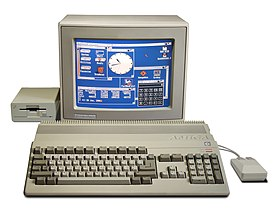
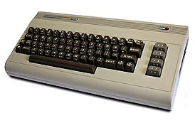
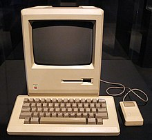

| Amiga 500 | Commodore 64 | ZX Spectrum | Macintosh 128k |
|---|---|---|---|
|  |  |
|
 |
| Amiga 500 | Wikipedia | Commodore 64 | Wikipedia | ZX Spectrum | Wikipedia | Macintosh 128k | Wikipedia |
| Commodore International | Commodore Business Machines (CBM) | Timex Corporation | Apple Computer, Inc. |
| Model | Type | Operating system | CPU | Graphics | Memory | Release Date |
|---|---|---|---|---|---|---|
| Amiga 500 | Personal computer | AmigaOS | Motorola 680x0 @ ≈7 MHz & higher | Full-screen animated graphics with 2, 4, 8, 16, 32, 64 (EHB Mode), or 4096 colors (HAM Mode) | 256 KB and higher, expandable | 1985 |
| Commodore 64 | Commodore KERNAL/BASIC 2.0 |
MOS Technology 6510/8500
@ 1.023 MHz (NTSC version) @ 0.985 MHz (PAL version) |
VIC-II (320×200, 16 colors, sprites, raster interrupt) | 64 KB (65,536 bytes) (IEC: KiB) RAM + 20 KB ROM | 1982 | |
| ZX Spectrum | BASIC 2.0 | Z80A @ 3.5 MHz and equivalent | The image resolution is 256×192 with the same colour limitations | 16 KB / 48 KB / 128 KB (IEC: KiB) | ||
| Macintosh 128K | System 1 | Motorola 68000 @ 7.8336 MHz (6 MHz effectively) | 9 in (23 cm) monochrome display, 512 × 342 | 128 KB RAM | 1984 |